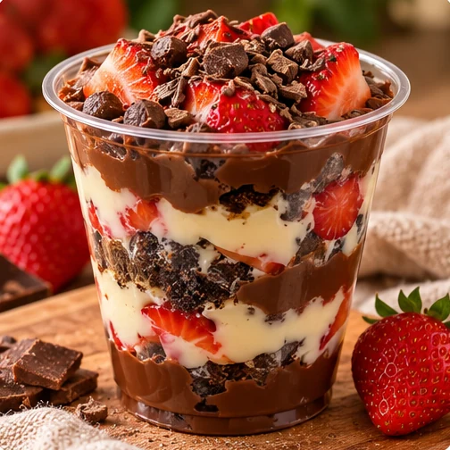
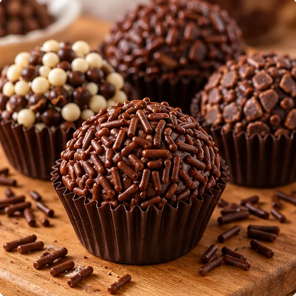
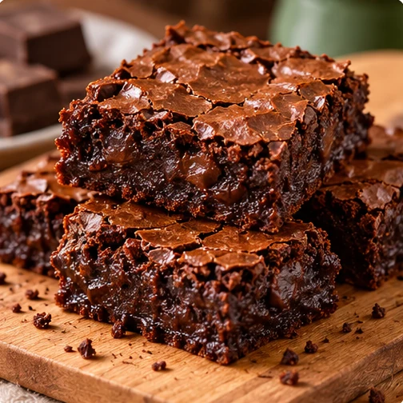
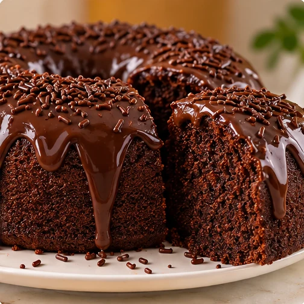
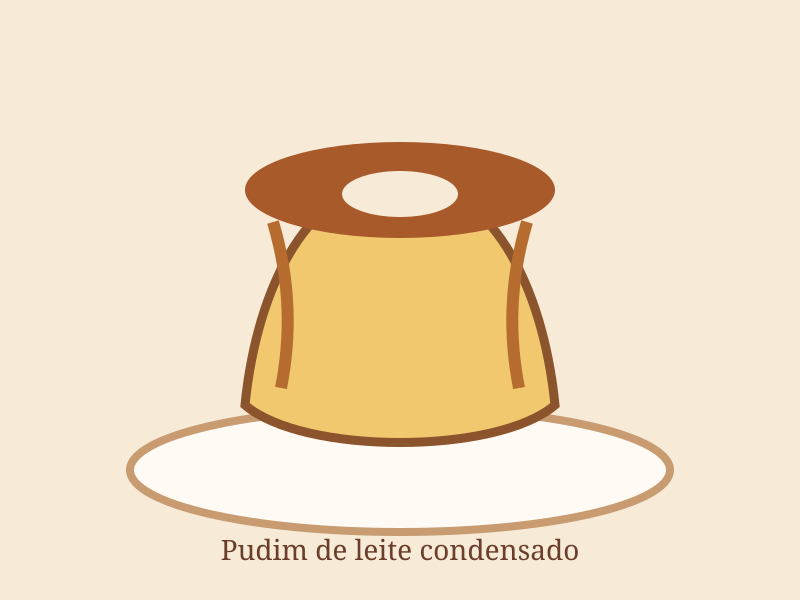
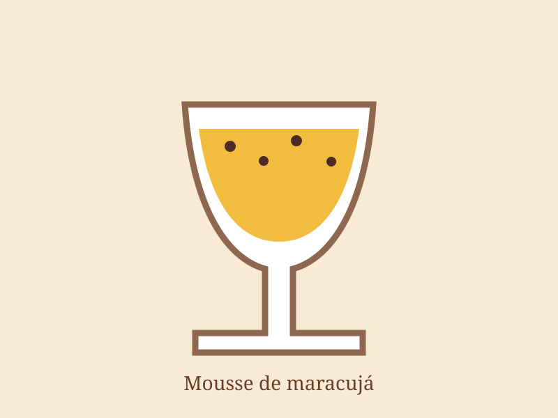
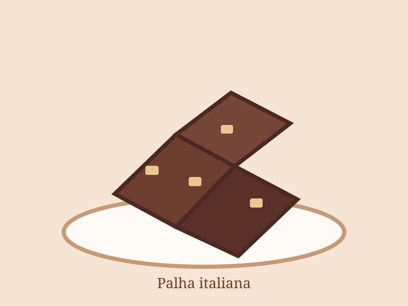

Doces para vender
Copo da felicidade simples para vender
Receita, montagem, conservação, custo e preço de venda.
Preparo descomplicado, medidas claras e dicas que ajudam você a entender cada etapa.
O acervo crescerá com receitas testáveis e conteúdo realmente útil.

Receita, montagem, conservação, custo e preço de venda.







